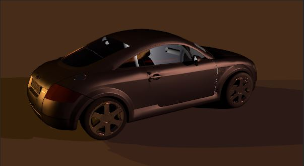
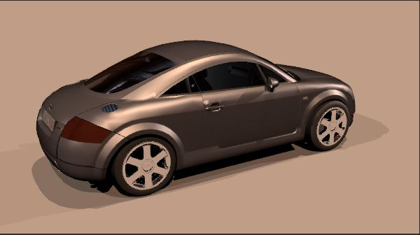

以Y=0.2125R+0.7154G+0.0721B將原本的texel array做轉換並乘上float sinTheta = sinf(M_PI * float(v + .5f) / float(height));
得到灰階圖。接著跑DivideImage這個recursive function
輸入要切割區域的直向跟橫向的起終點texel number，以長的那邊做切割並沿著短軸將其上點的灰階值做累加。 接著決定要切再長軸的哪個點，方法是在長軸的頭尾各放一個bucket，若頭的值比較小則頭的index+1並且加入對應點的灰階值，尾的值比較小則尾的index-1並且加入對應點的灰階值。 直到頭的index比尾的index大1則用頭的index當作切割軸，並做recursive call。當切割的總個數達到nSample時進入recursive的中止條件，也就是計算該區域代表光源的位置，方法就是把區域內所有texel的灰階值乘上該點的座標並相加，最後再除以區域內所有灰階值的相加，得到代表光源的位置。並把整個區域的spectrum相加當作該點的spectrum存進一個vector中，所以當整個recursive的DivideImage跑完時vector內會有nSample個點光源的資訊
以亂數決定要從vector中取出哪個點光源，並把他的s, t座標分別對應到phi, theta得到球座標。
把球座標轉回直角座標就是wi的方向，且pdf =1 / nSample，並把vector內該點的spectrum傳回
envlight-4 & envlight-4-my

envlight-16 & envlight-16-my
envlight-64 & envlight-64-my
envlight-256 & envlight-256-my
envlight-new-4 & envlight-new-4-my
envligh-newt-16 & envlight-1-new-my
envlight-new-64 & envlight-new-64-my
envlight-new-256 & envlight-new-256-my
CPU: Intel Xeon E5-2650 v3 40core 2.3GHz, MEM: 128G, OS: Debian 64bit
| type | default time(sec) | my time(sec) |
|---|---|---|
| envlight-4 | 6.02 | 5.45 |
| envlight-16 | 5.93 | 6.04 |
| envlight-64 | 6.98 | 9.26 |
| envlight-256 | 9.6 | 21.08 |
| envlight-new-4 | 14.45 | 8.7 |
| envlight-new-16 | 14.46 | 9.61 |
| envlight-new-64 | 15.73 | 13.48 |
| envlight-new-256 | 25.43 | 27.79 |